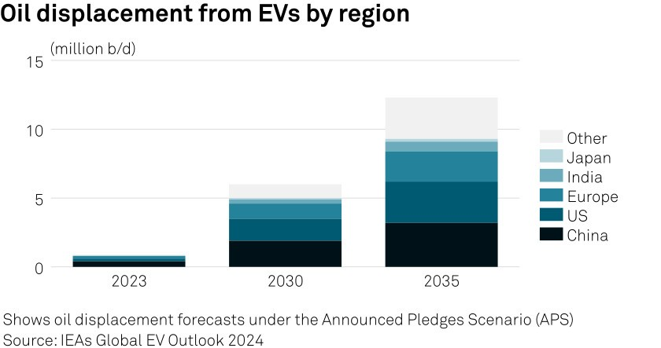
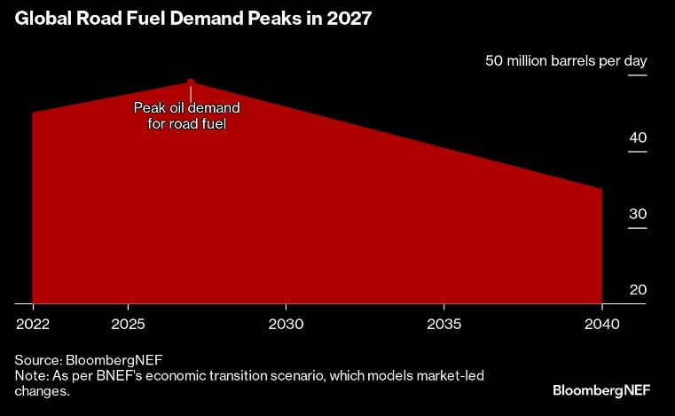
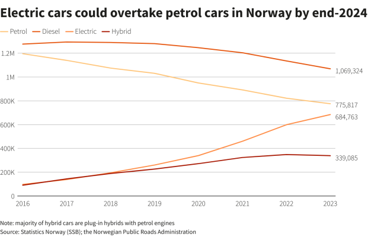
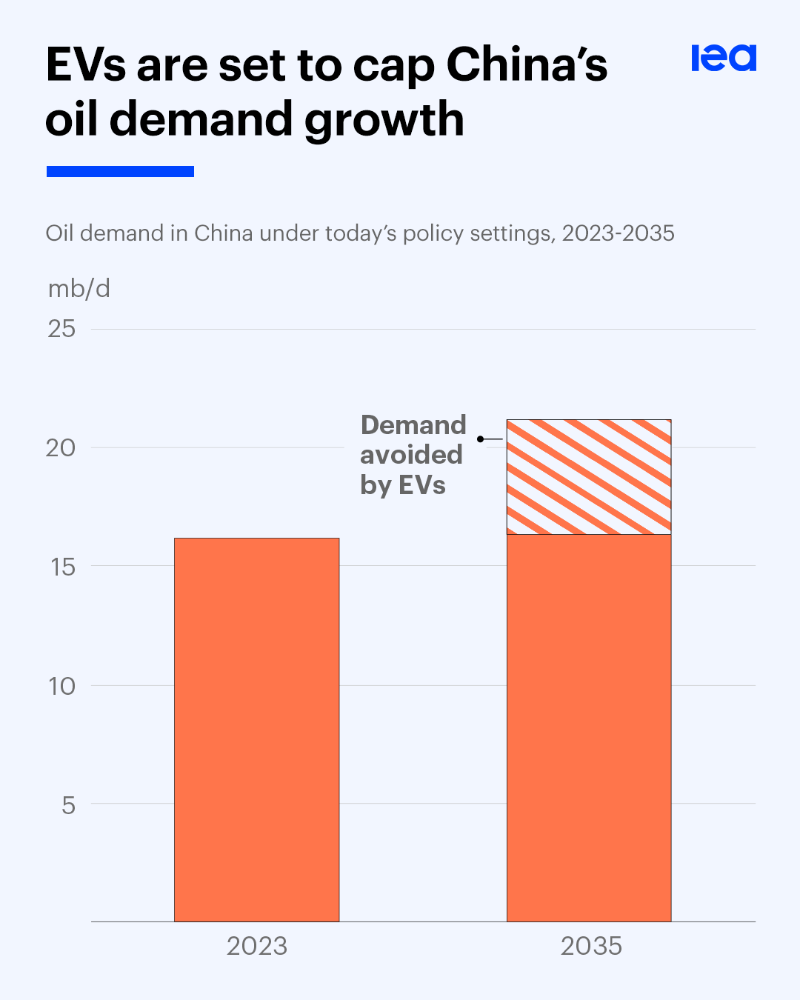

The rise of electric vehicles (EVs) is significantly reshaping the landscape of global oil demand and prices. As EV adoption accelerates, forecasts indicate a substantial displacement of oil consumption, particularly in the transportation sector, which accounts for over half of global oil demand.
Current Trends in Oil Demand
In 2022, global oil consumption reached approximately 102 million barrels per day (b/d), with nearly half attributed to road transport.
However, the impact of EVs on this demand is becoming increasingly pronounced. In 2022, EVs displaced about 1.5 million b/d of oil, a figure projected to grow significantly in the coming years. The International Energy Agency (IEA) anticipates that by 2030, this displacement could reach 6 million b/d, and potentially 12 million b/d by 2035 if countries adhere to their climate commitments.

Future Projections
Looking further ahead, BloombergNEF predicts that by 2040, oil demand displaced by EVs could exceed 20 million b/d. This represents a dramatic structural decline in road fuel demand, which is expected to peak at 49 million b/d in 2027 before falling to 35 million b/d by 2040.
The IEA also supports this view, suggesting that peak oil demand will occur around 2030, influenced by the growing penetration of electric vehicles in key markets like China, Europe, and North America.

Factors Influencing Oil Prices
Despite the anticipated decline in oil demand due to EVs, the relationship between oil demand reduction and oil prices is complex. The decline in consumption does not automatically lead to lower prices; rather, it could result in price volatility depending on supply dynamics. If new oil supply investments decrease faster than demand diminishes, prices may remain high or unstable.
Additionally, geopolitical factors and OPEC 's strategies to manage production levels can also impact pricing trends.
Structural Changes in the Oil Market
The shift towards electrification is prompting significant adjustments within the oil industry. Major oil companies are beginning to prepare for a future with reduced oil volumes as they adapt their business models to align with net-zero emissions goals. European firms are reportedly leading this transition, with companies like Equinor and BP taking proactive steps toward sustainable energy initiatives.
Case Studies on EV Impact
Case Study 1: Norway’s EV Adoption and Its Impact on Oil Demand
Norway leads the world in EV adoption, with over 80% of new cars sold in 2022 being electric. As a result, the demand for gasoline and diesel in Norway has significantly declined. This shift demonstrates how strong government incentives, public awareness, and extensive charging infrastructure can drive rapid changes in oil consumption patterns.

Case Study 2: China’s EV Market Boom and Global Oil Prices
China, the world’s largest automotive market, has aggressively promoted EV adoption to reduce pollution and meet climate goals. In 2023, China’s EV sales represented nearly 30% of the global EV market. This shift has started impacting global oil demand, as China is a major consumer. With continued growth, China’s EV adoption could exert more pressure on global oil prices in the coming years.

Case Study 3: California’s Push for EVs and Effects on U.S. Oil Consumption
California, a trendsetter in environmental regulations, has set ambitious targets to phase out gasoline vehicles by 2035. With one of the highest EV adoption rates in the U.S., California’s policies are already reducing gasoline consumption and influencing neighboring states. This reduction in oil demand within a major U.S. economy could accelerate national trends toward reduced oil dependency.
Case Study 4: Saudi Arabia’s Economic Diversification in Response to EV Growth
Saudi Arabia, one of the world’s largest oil producers, is proactively responding to declining oil demand due to EV growth. Through its Vision 2030 initiative, Saudi Arabia is investing in renewable energy and developing industries outside of oil, including tourism and tech. This diversification strategy reflects the country's need to adapt to a changing global energy market.
Conclusion
In summary, the impact of electric vehicles on oil demand is poised to be transformative. As EV adoption accelerates, particularly supported by favorable policies and technological advancements in battery efficiency, a substantial portion of current oil consumption will be displaced. While this trend presents challenges for traditional oil markets, it also offers opportunities for innovation and investment in alternative energy sources. The coming decade will be crucial as these dynamics unfold and reshape the global energy landscape.